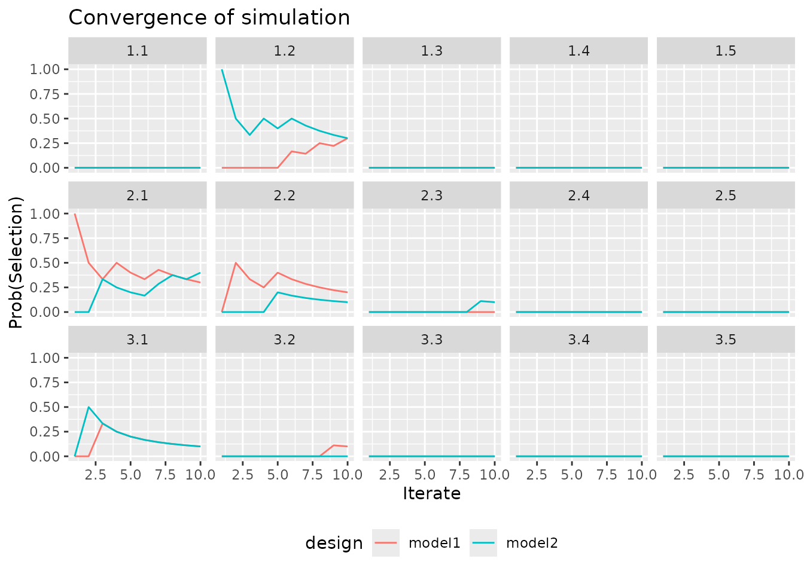

BOIN-COMB - Treatment Combination Designs
Source:vignettes/A360-Combinations.Rmd
A360-Combinations.RmdIntroduction
The great majority of dose-finding designs are intended for use on a single treatment whose dose is being varied. There are a small number of designs that are intended for dose-finding in multiple therapies combined, where the dose of more than one treatment can be varied. A notable feature of this challenge is that the resulting dose space is multi-dimensional. There is no longer a single optimal dose or maximum tolerable dose to identify but a contour of treatment combinations that have similar event probabilities.
Outcome nomenclature
The outcome syntax used elsewhere in escalation to
represent the patient-level doses administered and outcomes experienced
has been extended to handle treatment combinations. The only material
change is in how the dose is written. In a monotherapy setting, we would
write 1 for dose-level 1 and 2 for dose-level
2, etc. In the treatment combination setting, we use a dotted decimal
notation (like that used in IP-addresses), so that, for example, the
third dose-level of the first treatment paired with the fourth
dose-level of the second treatment is written as 3.4. The
same outcome designators E, T, B
and N (representing efficacy only, toxicity only, both
effiecacy and toxicity, and neither efficacy nor toxicity) are strung
after the dose to represent the outcomes of patients in cohorts. There
currently are no designs implemented in escalation that
investigate efficacy and toxicity in treatment combincations but the
syntax can theoretically accomodate them.
For illustration, let us imagine a dose-finding trial of three
treatments in a trial where each patient can either experience toxicity
T, or no toxicity N. Suppose further the first
cohort of three patients is treated at the first dose-level of each of
the three therapies and none of the patients experiences toxicity. The
outcome string to reflect this is:
1.1.1NNN
Now suppose, by way of some experimental design, we decide that the
dose-level of the first treatment should be escalated to the second
level whilst the dose-level of the second and third treatments is kept
at level 1. The dose string will become 2.1.1. Suppose we
give this dose to a cohort of three new patients, and that two of the
patients tolerate without toxicity but the third patient experiences
tox. The outcome string for the whole trial so far is:
1.1.1NNN 2.1.1NNT
This syntax can be used to describe the doses and outcomes for any arrangement of discrete dose-levels in any number of treatments.
BOIN-COMB
The BOIN method was originally presented by Liu and Yuan (2015) for dose-finding in a single
treatment. BOIN-COMB (Lin and Yin 2017)
generalises BOIN to investigate doses in exactly two treatments (not
more) in search of dose pairs with toxicity probability close to a
pre-specified target rate. Currently, BOIN-COMB is the only design for
treatment combinations implemented in escalation We
demonstrate some examples below.
Implementation in escalation
BOIN-COMB
We now demonstrate BOIN-COMB, focusing on how the shape of returned objects is different to monotherapy dose-finding.
In their treatment combination examples, the BOIN
package authors investigate a situation where there are three doses of
the first treatment being paired with five doses of the second
treatment, targeting a 30% toxicity rate. The first big difference
compared to monotherapy dose-finding is that num_doses now
must be a vector rather than a scalar integer:
library(escalation)
num_doses <- c(3, 5)
target <- 0.3We create a dose selector:
boin_fitter <- get_boin_comb(
num_doses = num_doses, target = target
)By default, the lower and upper toxicity rate thresholds in BOIN-COMB
are set to p.saf = 0.6 * target = 0.18 and
p.tox = 1.4 * target = 0.42, so the above call is
equivalent to:
model <- get_boin_comb(
num_doses = num_doses, target = target,
p.saf = 0.18, p.tox = 0.42
)Naturally we can override those with our own values to make escalation harder or easier.
We now fit the model to outcomes. The authors investigate outcomes:
outcomes <- "1.1NNN 2.1NNNNNNT 2.2NNNNNT"I.e. the first cohort of three is treated at the lowest dose combination with no tox experienced; the second cohort, comprising seven patients, is dosed at the second dose-level of the first treatment paired with the first dose-level of the second treatment, with one patient experiencing tox; and the third cohort, comprising six patients, is dosed at the second dose-level of the first treatment paired with the second dose-level of the second treatment, again with one patient experiencing tox. As you can see, a lot of information is conveyed in 27 characters.
Let’s fit the model:
leading to advice to continue:
at dose 2.3:
fit %>% recommended_dose()
#> [1] 2 3Final dose selection
BOIN-COMB, like some other designs, selects the final dose
differently to how it selects doses mid-trial. To achieve this in
escalation, we need an extra selector that will kick-in
when the parent selector(s) have selected a non-NA dose but expressed
continue == FALSE, i.e. signaled the trial ends now but
we are interested in a dose. If used, it will almost surely come
last in the selector chain:
model <- get_boin_comb(num_doses = num_doses, target = target) %>%
stop_at_n(n = 12) %>%
select_boin_comb_mtd()
outcomes <- '1.1NNN 1.2NTN 1.2NNN 2.1TNT'
model %>% fit(outcomes) %>% recommended_dose()
#> [1] 1 2In the above example, stop_at_n stopped the trial
because the threshold sample size was met, and the underlying algorithm
identified that at least one dose was worthy of selection. At this
juncture, select_boin_comb_mtd took over and applied the
method described by the authors. Whilst the underlying selector(s) were
busy conducting the trial (continue == TRUE),
select_boin_comb_mtd kept silent.
Combination with other dose selectors
We demonstrated above how get_boin_comb works with the
auxiliary dose-selector stop_at_n. In a similar way,
get_boin_comb will work with many other dose-selectors in
escalation.
For instance, we might wish to stop the trial once we have reached a
target sample size at recommended dose. For instance, the following
model wants to recommended dose 2.1:
set.seed(2025)
model <- get_boin_comb(num_doses = num_doses, target = target) %>%
stop_when_n_at_dose(n = 3, dose = "recommended")
outcomes <- '1.1NNN 2.1NTN'
x <- model %>% fit(outcomes)
recommended_dose(x)
#> [1] 2 1But it has reached the target sample size at that dose so it advocates stopping:
continue(x)
#> [1] FALSELikewise, we could have specified a dose explicitly by the dose-indices:
set.seed(2025)
model <- get_boin_comb(num_doses = num_doses, target = target) %>%
stop_when_n_at_dose(n = 3, dose = c(2, 1))
outcomes <- '1.1NNN 2.1NTN'
x <- model %>% fit(outcomes)
recommended_dose(x)
#> [1] 2 1
continue(x)
#> [1] FALSEThere are many other dose-selectors in escalation. PLease get in contact if you discover a combination that does not work and you are pretty sure that it should!
Dose paths
Dose-paths for combinations are theoretically possible. However, at present they are not implemented yet:
cohort_sizes <- c(3, 3)
paths <- model %>%
get_dose_paths(
cohort_sizes = cohort_sizes,
previous_outcomes = '1NNN', next_dose = 2
)
#> Error in dose_paths_function.combo_selector_factory(selector_factory$parent): Dose-paths for combination studies not yet implemented.For more information on working with dose-paths, refer to the dose-paths vignette.
Simulation
Simulations are implemented for combination designs but there are some necessary differences compared to monotherapy situations. To illustrate, we will continue with the BOIN-COMB design already introduced, that will use a modest sample size:
model <- get_boin_comb(num_doses = num_doses, target = target) %>%
stop_at_n(n = 12) %>%
select_boin_comb_mtd()Let us specify a plausible true dose-toxicity scenario:
true_prob_tox <- matrix(c(0.1, 0.2, 0.3, 0.4, 0.5,
0.25, 0.35, 0.45, 0.55, 0.65,
0.3, 0.4, 0.5, 0.6, 0.7),
nrow = num_doses[1],
ncol = num_doses[2],
byrow = TRUE)
true_prob_tox
#> [,1] [,2] [,3] [,4] [,5]
#> [1,] 0.10 0.20 0.30 0.40 0.50
#> [2,] 0.25 0.35 0.45 0.55 0.65
#> [3,] 0.30 0.40 0.50 0.60 0.70As with all designs in escalation, we perform
simulations like this:
set.seed(2025)
sims <- model %>%
simulate_trials(num_sims = 10, true_prob_tox = true_prob_tox)By default, we get some useful output:
sims
#> Number of iterations: 10
#>
#> Number of doses: 3 5
#>
#> True probability of toxicity:
#> [,1] [,2] [,3] [,4] [,5]
#> [1,] 0.10 0.20 0.30 0.40 0.50
#> [2,] 0.25 0.35 0.45 0.55 0.65
#> [3,] 0.30 0.40 0.50 0.60 0.70
#>
#> Probability of recommendation:
#> # A tibble: 16 × 3
#> dose dose_string prob_recommend
#> <list> <chr> <dbl>
#> 1 <chr [1]> NoDose 0
#> 2 <int [2]> 1.1 0
#> 3 <int [2]> 1.2 0.3
#> 4 <int [2]> 1.3 0
#> 5 <int [2]> 1.4 0
#> 6 <int [2]> 1.5 0
#> 7 <int [2]> 2.1 0.3
#> 8 <int [2]> 2.2 0.2
#> 9 <int [2]> 2.3 0
#> 10 <int [2]> 2.4 0
#> 11 <int [2]> 2.5 0
#> 12 <int [2]> 3.1 0.1
#> 13 <int [2]> 3.2 0.1
#> 14 <int [2]> 3.3 0
#> 15 <int [2]> 3.4 0
#> 16 <int [2]> 3.5 0
#>
#> Probability of administration:
#> [,1] [,2] [,3] [,4] [,5]
#> [1,] 0.275 0.225 0.025 0 0
#> [2,] 0.225 0.175 0.000 0 0
#> [3,] 0.025 0.050 0.000 0 0
#>
#> Sample size:
#> Min. 1st Qu. Median Mean 3rd Qu. Max.
#> 12 12 12 12 12 12
#>
#> Total toxicities:
#> Min. 1st Qu. Median Mean 3rd Qu. Max.
#> 0.0 2.0 2.0 2.5 3.0 5.0
#>
#> Trial duration:
#> Min. 1st Qu. Median Mean 3rd Qu. Max.
#> 6.915 9.249 10.877 11.298 13.933 15.887However, we can dive deeper. The same generics that can be invoked on the sims object in monotherapy scenarios can also be used in combinations studies. However, some of the formats of the returned objects are different to reflect that dose is multi-dimensional. We consider those generics each briefly now.
The number of patients in each simulated trial behaves as before:
num_patients(sims)
#> [1] 12 12 12 12 12 12 12 12 12 12The number of doses is now a vector:
num_doses(sims)
#> [1] 3 5The set of possible dose-indices is a list, with each element being a vector on integers:
dose_indices(sims)
#> [[1]]
#> [1] 1 1
#>
#> [[2]]
#> [1] 1 2
#>
#> [[3]]
#> [1] 1 3
#>
#> [[4]]
#> [1] 1 4
#>
#> [[5]]
#> [1] 1 5
#>
#> [[6]]
#> [1] 2 1
#>
#> [[7]]
#> [1] 2 2
#>
#> [[8]]
#> [1] 2 3
#>
#> [[9]]
#> [1] 2 4
#>
#> [[10]]
#> [1] 2 5
#>
#> [[11]]
#> [1] 3 1
#>
#> [[12]]
#> [1] 3 2
#>
#> [[13]]
#> [1] 3 3
#>
#> [[14]]
#> [1] 3 4
#>
#> [[15]]
#> [1] 3 5That some information is more succinctly represented in dotted-decimal string notation:
dose_strings(sims)
#> [1] "1.1" "1.2" "1.3" "1.4" "1.5" "2.1" "2.2" "2.3" "2.4" "2.5" "3.1" "3.2"
#> [13] "3.3" "3.4" "3.5"The recommended final dose in each iterate is available in string form:
recommended_dose(sims, dose_string = TRUE)
#> [1] "2.1" "2.2" "3.1" "2.1" "2.2" "1.2" "2.1" "1.2" "3.2" "1.2"or in matrix form, with simulated iterates in rows, treatment in columns, and matrix cells represending the dose-index of the relevant treatment:
recommended_dose(sims, dose_string = FALSE)
#> [,1] [,2]
#> [1,] 2 1
#> [2,] 2 2
#> [3,] 3 1
#> [4,] 2 1
#> [5,] 2 2
#> [6,] 1 2
#> [7,] 2 1
#> [8,] 1 2
#> [9,] 3 2
#> [10,] 1 2The number of patients at each dose for a given trial is now a multi-dimensional array, and a 2*2 matrix in BOIN-COMB. The same info for many trials for convenience is represented as a list, with one item for each simulated iterate:
n_at_dose(sims)
#> [[1]]
#> [,1] [,2] [,3] [,4] [,5]
#> [1,] 6 3 0 0 0
#> [2,] 3 0 0 0 0
#> [3,] 0 0 0 0 0
#>
#> [[2]]
#> [,1] [,2] [,3] [,4] [,5]
#> [1,] 3 0 0 0 0
#> [2,] 3 6 0 0 0
#> [3,] 0 0 0 0 0
#>
#> [[3]]
#> [,1] [,2] [,3] [,4] [,5]
#> [1,] 3 0 0 0 0
#> [2,] 6 0 0 0 0
#> [3,] 3 0 0 0 0
#>
#> [[4]]
#> [,1] [,2] [,3] [,4] [,5]
#> [1,] 3 0 0 0 0
#> [2,] 6 3 0 0 0
#> [3,] 0 0 0 0 0
#>
#> [[5]]
#> [,1] [,2] [,3] [,4] [,5]
#> [1,] 3 3 0 0 0
#> [2,] 0 3 0 0 0
#> [3,] 0 3 0 0 0
#>
#> [[6]]
#> [,1] [,2] [,3] [,4] [,5]
#> [1,] 3 6 0 0 0
#> [2,] 0 3 0 0 0
#> [3,] 0 0 0 0 0
#>
#> [[7]]
#> [,1] [,2] [,3] [,4] [,5]
#> [1,] 3 0 0 0 0
#> [2,] 9 0 0 0 0
#> [3,] 0 0 0 0 0
#>
#> [[8]]
#> [,1] [,2] [,3] [,4] [,5]
#> [1,] 3 6 3 0 0
#> [2,] 0 0 0 0 0
#> [3,] 0 0 0 0 0
#>
#> [[9]]
#> [,1] [,2] [,3] [,4] [,5]
#> [1,] 3 3 0 0 0
#> [2,] 0 3 0 0 0
#> [3,] 0 3 0 0 0
#>
#> [[10]]
#> [,1] [,2] [,3] [,4] [,5]
#> [1,] 3 6 0 0 0
#> [2,] 0 3 0 0 0
#> [3,] 0 0 0 0 0When focusing just on the sample size at the recommended dose, the data is represented as a vector of integers:
n_at_dose(sims, dose = "recommended")
#> [1] 3 6 3 6 3 6 9 6 3 6That same information is returned by:
n_at_recommended_dose(sims)
#> [1] 3 6 3 6 3 6 9 6 3 6Likewise, the number of toxicity events seen at each dose combination in each ieterate is returned in a congruent form:
tox_at_dose(sims)
#> [[1]]
#> [,1] [,2] [,3] [,4] [,5]
#> [1,] 0 2 0 0 0
#> [2,] 0 0 0 0 0
#> [3,] 0 0 0 0 0
#>
#> [[2]]
#> [,1] [,2] [,3] [,4] [,5]
#> [1,] 0 0 0 0 0
#> [2,] 0 3 0 0 0
#> [3,] 0 0 0 0 0
#>
#> [[3]]
#> [,1] [,2] [,3] [,4] [,5]
#> [1,] 0 0 0 0 0
#> [2,] 1 0 0 0 0
#> [3,] 1 0 0 0 0
#>
#> [[4]]
#> [,1] [,2] [,3] [,4] [,5]
#> [1,] 0 0 0 0 0
#> [2,] 1 3 0 0 0
#> [3,] 0 0 0 0 0
#>
#> [[5]]
#> [,1] [,2] [,3] [,4] [,5]
#> [1,] 0 0 0 0 0
#> [2,] 0 0 0 0 0
#> [3,] 0 2 0 0 0
#>
#> [[6]]
#> [,1] [,2] [,3] [,4] [,5]
#> [1,] 0 0 0 0 0
#> [2,] 0 2 0 0 0
#> [3,] 0 0 0 0 0
#>
#> [[7]]
#> [,1] [,2] [,3] [,4] [,5]
#> [1,] 0 0 0 0 0
#> [2,] 3 0 0 0 0
#> [3,] 0 0 0 0 0
#>
#> [[8]]
#> [,1] [,2] [,3] [,4] [,5]
#> [1,] 0 2 3 0 0
#> [2,] 0 0 0 0 0
#> [3,] 0 0 0 0 0
#>
#> [[9]]
#> [,1] [,2] [,3] [,4] [,5]
#> [1,] 0 0 0 0 0
#> [2,] 0 0 0 0 0
#> [3,] 0 0 0 0 0
#>
#> [[10]]
#> [,1] [,2] [,3] [,4] [,5]
#> [1,] 0 0 0 0 0
#> [2,] 0 2 0 0 0
#> [3,] 0 0 0 0 0The total number of toxicities seen over all doses in each iterate is simple to understand:
num_tox(sims)
#> [1] 2 3 2 4 2 2 3 5 0 2BOIN-COMB does not assess efficacy, but if it did, equivalent functions would return the counts (but merely return NA here:)
eff_at_dose(sims) %>% head(2)
#> [[1]]
#> [,1] [,2] [,3] [,4] [,5]
#> [1,] NA NA NA NA NA
#> [2,] NA NA NA NA NA
#> [3,] NA NA NA NA NA
#>
#> [[2]]
#> [,1] [,2] [,3] [,4] [,5]
#> [1,] NA NA NA NA NA
#> [2,] NA NA NA NA NA
#> [3,] NA NA NA NA NA
num_eff(sims)
#> [1] NA NA NA NA NA NA NA NA NA NAThe probability of each dose being recommended is presented in a
data-frame, with column dose containing a vector of dose
indices for each dose (e.g. c(1, 1) for the pair of first
dose), and dose_string comprising the same in
dotted-decimal string format:
prob_recommend(sims)
#> # A tibble: 16 × 3
#> dose dose_string prob_recommend
#> <list> <chr> <dbl>
#> 1 <chr [1]> NoDose 0
#> 2 <int [2]> 1.1 0
#> 3 <int [2]> 1.2 0.3
#> 4 <int [2]> 1.3 0
#> 5 <int [2]> 1.4 0
#> 6 <int [2]> 1.5 0
#> 7 <int [2]> 2.1 0.3
#> 8 <int [2]> 2.2 0.2
#> 9 <int [2]> 2.3 0
#> 10 <int [2]> 2.4 0
#> 11 <int [2]> 2.5 0
#> 12 <int [2]> 3.1 0.1
#> 13 <int [2]> 3.2 0.1
#> 14 <int [2]> 3.3 0
#> 15 <int [2]> 3.4 0
#> 16 <int [2]> 3.5 0The probability of each dose being administered to a patient is available average over all simulated iterates:
prob_administer(sims, method = 0)
#> [,1] [,2] [,3] [,4] [,5]
#> [1,] 0.275 0.225 0.025 0 0
#> [2,] 0.225 0.175 0.000 0 0
#> [3,] 0.025 0.050 0.000 0 0or within in each iterate:
prob_administer(sims, method = 1)
#> [[1]]
#> [,1] [,2] [,3] [,4] [,5]
#> [1,] 0.50 0.25 0 0 0
#> [2,] 0.25 0.00 0 0 0
#> [3,] 0.00 0.00 0 0 0
#>
#> [[2]]
#> [,1] [,2] [,3] [,4] [,5]
#> [1,] 0.25 0.0 0 0 0
#> [2,] 0.25 0.5 0 0 0
#> [3,] 0.00 0.0 0 0 0
#>
#> [[3]]
#> [,1] [,2] [,3] [,4] [,5]
#> [1,] 0.25 0 0 0 0
#> [2,] 0.50 0 0 0 0
#> [3,] 0.25 0 0 0 0
#>
#> [[4]]
#> [,1] [,2] [,3] [,4] [,5]
#> [1,] 0.25 0.00 0 0 0
#> [2,] 0.50 0.25 0 0 0
#> [3,] 0.00 0.00 0 0 0
#>
#> [[5]]
#> [,1] [,2] [,3] [,4] [,5]
#> [1,] 0.25 0.25 0 0 0
#> [2,] 0.00 0.25 0 0 0
#> [3,] 0.00 0.25 0 0 0
#>
#> [[6]]
#> [,1] [,2] [,3] [,4] [,5]
#> [1,] 0.25 0.50 0 0 0
#> [2,] 0.00 0.25 0 0 0
#> [3,] 0.00 0.00 0 0 0
#>
#> [[7]]
#> [,1] [,2] [,3] [,4] [,5]
#> [1,] 0.25 0 0 0 0
#> [2,] 0.75 0 0 0 0
#> [3,] 0.00 0 0 0 0
#>
#> [[8]]
#> [,1] [,2] [,3] [,4] [,5]
#> [1,] 0.25 0.5 0.25 0 0
#> [2,] 0.00 0.0 0.00 0 0
#> [3,] 0.00 0.0 0.00 0 0
#>
#> [[9]]
#> [,1] [,2] [,3] [,4] [,5]
#> [1,] 0.25 0.25 0 0 0
#> [2,] 0.00 0.25 0 0 0
#> [3,] 0.00 0.25 0 0 0
#>
#> [[10]]
#> [,1] [,2] [,3] [,4] [,5]
#> [1,] 0.25 0.50 0 0 0
#> [2,] 0.00 0.25 0 0 0
#> [3,] 0.00 0.00 0 0 0The trial duration is simple to understand:
trial_duration(sims)
#> [1] 14.275537 10.076049 6.915256 12.905144 9.157043 14.414556 15.886741
#> [8] 8.150282 11.678720 9.523587summary gives a data-frame summary with doses (and
stopping without selecting a dose) as rows and much of the above
information in columns:
summary(sims)
#> # A tibble: 16 × 6
#> dose tox n true_prob_tox prob_recommend prob_administer
#> <fct> <dbl> <dbl> <dbl> <dbl> <dbl>
#> 1 NoDose 0 0 0 0 0
#> 2 1.1 0 3.3 0.1 0 0.275
#> 3 1.2 0.4 2.7 0.2 0.3 0.225
#> 4 1.3 0.3 0.3 0.3 0 0.025
#> 5 1.4 0 0 0.4 0 0
#> 6 1.5 0 0 0.5 0 0
#> 7 2.1 0.5 2.7 0.25 0.3 0.225
#> 8 2.2 1 2.1 0.35 0.2 0.175
#> 9 2.3 0 0 0.45 0 0
#> 10 2.4 0 0 0.55 0 0
#> 11 2.5 0 0 0.65 0 0
#> 12 3.1 0.1 0.3 0.3 0.1 0.025
#> 13 3.2 0.2 0.6 0.4 0.1 0.05
#> 14 3.3 0 0 0.5 0 0
#> 15 3.4 0 0 0.6 0 0
#> 16 3.5 0 0 0.7 0 0as_tibble returns one row for each dose in each
simulated iterate, offering a deep-dive into the simulated trials:
tibble::as_tibble(sims)
#> # A tibble: 160 × 12
#> .iteration .depth time dose tox n empiric_tox_rate mean_prob_tox
#> <int> <dbl> <dbl> <ord> <dbl> <dbl> <dbl> <dbl>
#> 1 1 5 14.3 NoDose 0 0 0 0
#> 2 1 5 14.3 1.1 0 6 0 0.00820
#> 3 1 5 14.3 1.2 2 3 0.667 0.619
#> 4 1 5 14.3 1.3 0 0 NaN 0.619
#> 5 1 5 14.3 1.4 0 0 NaN 0.619
#> 6 1 5 14.3 1.5 0 0 NaN 0.619
#> 7 1 5 14.3 2.1 0 3 0 0.0161
#> 8 1 5 14.3 2.2 0 0 NaN 0.619
#> 9 1 5 14.3 2.3 0 0 NaN 0.619
#> 10 1 5 14.3 2.4 0 0 NaN 0.619
#> # ℹ 150 more rows
#> # ℹ 4 more variables: median_prob_tox <dbl>, admissible <lgl>,
#> # recommended <lgl>, true_prob_tox <dbl>Furthermore, the simulation comparison method of Sweeting et al. (2024) is implemented, allowing us to efficiently investigate small differences in competing designs with code like:
model1 <- get_boin_comb(
num_doses = num_doses, target = target,
p.saf = 0.6 * target, p.tox = 1.4 * target
) %>%
stop_at_n(n = 12) %>%
select_boin_comb_mtd()
model2 <- get_boin_comb(
num_doses = num_doses, target = target,
p.saf = 0.5 * target, p.tox = 1.5 * target
) %>%
stop_at_n(n = 12) %>%
select_boin_comb_mtd()
designs <- list(
model1 = model1,
model2 = model2
)
set.seed(2025)
sims <- simulate_compare(
designs = designs,
num_sims = 10,
true_prob_tox = true_prob_tox
)
#> Running model1
#> Running model2
convergence_plot(sims)
tibble::as_tibble(sims)
#> # A tibble: 150 × 22
#> dose n design.x hit.x design.y hit.y X X2 Y Y2 XY psi1
#> <chr> <int> <ord> <lgl> <ord> <lgl> <int> <dbl> <int> <dbl> <int> <dbl>
#> 1 1.1 1 model2 FALSE model1 FALSE 0 0 0 0 0 0
#> 2 1.1 2 model2 FALSE model1 FALSE 0 0 0 0 0 0
#> 3 1.1 3 model2 FALSE model1 FALSE 0 0 0 0 0 0
#> 4 1.1 4 model2 FALSE model1 FALSE 0 0 0 0 0 0
#> 5 1.1 5 model2 FALSE model1 FALSE 0 0 0 0 0 0
#> 6 1.1 6 model2 FALSE model1 FALSE 0 0 0 0 0 0
#> 7 1.1 7 model2 FALSE model1 FALSE 0 0 0 0 0 0
#> 8 1.1 8 model2 FALSE model1 FALSE 0 0 0 0 0 0
#> 9 1.1 9 model2 FALSE model1 FALSE 0 0 0 0 0 0
#> 10 1.1 10 model2 FALSE model1 FALSE 0 0 0 0 0 0
#> # ℹ 140 more rows
#> # ℹ 10 more variables: psi2 <dbl>, v_psi1 <dbl>, v_psi2 <dbl>, cov_psi12 <dbl>,
#> # delta <dbl>, v_delta <dbl>, se_delta <dbl>, delta_l <dbl>, delta_u <dbl>,
#> # comparison <chr>For more information on running dose-finding simulations, refer to the simulation vignette.